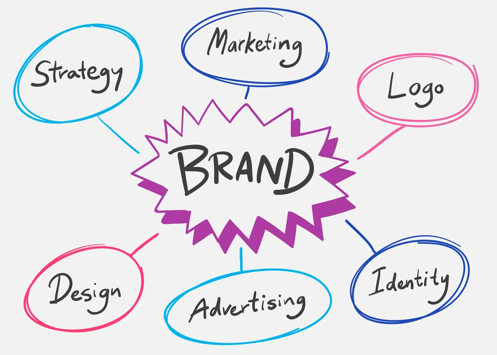

The Power of Branding
Criptonx March 7 2024 Insight

Building a Strong Visual Identity for Your Business
In the competitive world of business, branding is everything. It's not just about having a great product or service—it's about creating a distinctive identity that sets you apart from the competition and resonates with your target audience. And at the heart of your brand identity is your visual identity—the visual elements that represent your brand and communicate its values, personality, and essence. In this blog post, we'll explore the power of branding and how to build a strong visual identity for your business.
Understanding the Importance of Branding

Branding is more than just a logo or a catchy slogan—it's the essence of your business, encapsulating everything from your mission and values to your unique selling proposition. A strong brand identity helps establish trust and credibility with your audience, differentiate your business from competitors, and foster a sense of loyalty and connection among your customers.
Think about iconic brands like Apple, Nike, or Coca-Cola. These brands have built a strong visual identity that instantly evokes emotions and associations with their products and values. From Apple's sleek, minimalist design aesthetic to Nike's iconic swoosh logo, these visual elements serve as powerful symbols of their respective brands and help them stand out in a crowded marketplace.
Building Your Visual Identity.
So, how do you go about building a strong visual identity for your business? Here are some key steps to consider:
1. Define Your Brand Identity:
Before you can create a visual identity, you need to have a clear understanding of your brand identity—who you are, what you stand for, and what makes you unique. Start by defining your brand's mission, values, and personality traits. Are you a luxury brand that values elegance and sophistication, or are you a playful and approachable brand that appeals to a younger demographic? Your visual identity should reflect these attributes.2. Design Your Logo:
Your logo is the cornerstone of your visual identity—it's the visual representation of your brand that will appear on everything from your website and marketing materials to your products and packaging. Work with a professional graphic designer to create a logo that reflects your brand's personality and values while being simple, memorable, and versatile enough to work across various platforms and mediums.3. Choose Your Colour Palette and Typography:
Colour and typography are powerful tools for conveying emotion and personality in your visual identity. Choose a colour palette that reflects your brand's aesthetic and resonates with your target audience. Consider the psychological associations of different colours—for example, blue is often associated with trust and reliability, while red conveys energy and excitement. Similarly, choose typography that aligns with your brand's personality—whether it's modern and minimalist or classic and elegant.4.Create Visual Assets:
Once you have your logo, colour palette, and typography in place, it's time to create additional visual assets that reinforce your brand identity. This could include things like branded graphics for social media, photography styles that reflect your brand's aesthetic, or illustrations and icons that convey key messages or concepts.5. Maintain Consistency:
Consistency is key to building a strong visual identity. Make sure that your visual assets are used consistently across all touchpoints, from your website and social media profiles to your marketing materials and packaging. This helps reinforce your brand's identity and makes it easier for customers to recognize and remember you. Examples of Strong Visual IdentitiesTo illustrate the power of branding and visual identity, let's take a look at a few examples of brands that have successfully built strong visual identities:
• Apple: Known for its clean, minimalist design aesthetic, Apple's visual identity is sleek, modern, and instantly recognizable. From its iconic bitten apple logo to its simple, elegant product designs, Apple's visual identity reflects its commitment to innovation, quality, and simplicity.
• Nike: Nike's visual identity is bold, dynamic, and energetic, reflecting its brand values of athleticism, empowerment, and determination. The brand's iconic swoosh logo and distinctive typography are instantly recognizable, whether they're emblazoned on a pair of sneakers or featured in a high-profile advertising campaign.
• Coca-Cola: Coca-Cola's visual identity is classic, timeless, and universally appealing. With its iconic red and white colour scheme, playful typography, and vintage-inspired imagery, Coca-Cola's visual identity evokes feelings of nostalgia, joy, and togetherness, making it one of the most recognizable brands in the world.
In conclusion, building a strong visual identity is essential for establishing your brand's presence, differentiating yourself from competitors, and connecting with your audience on a deeper level. By defining your brand identity, designing a memorable logo, choosing the right colour palette and typography, creating consistent visual assets, and maintaining consistency across all touchpoints, you can create a visual identity that resonates with your audience and helps your business stand out in a crowded marketplace.